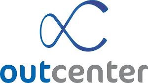

Hello! I am Elton! You're Welcome.
My passion for computing started when I was 16, when I got a big white screen computer from my mom. It was a good PC, because it had the Pinball game. Since then, I started to venture into the world of technology.
Today I have a degree in Computer Science from the Pontifical Catholic University of Minas Gerais (PUC Minas). I'm a Full Stack Developer and Network Administrator. I like challanges that give me greater learning and experience, always seeking knowledge and updating myself on new technologies in the market.
Skills
 C
C
 Docker
Docker
 Java
Java
 Ruby
Ruby
 JavaScript
JavaScript
 CSS
CSS
 HTML
HTML
 REACTJS
REACTJS
 Postgresql
Postgresql
 Amazon Web Services
Amazon Web Services
 Python
Python
I am currently working on a receivables processing financial platform, where the client can prepay duplicates. Today the platform is being developed in Ruby on Rails and React, with an architecture based on microservices.
In addition, it has integration with other companies such as Neoway, ABC Bank and CERC, to collect and analyze information from different areas.
At Ateliê de Software I worked on 3 projects as a full stack developer.
The first project was from the company VAGAS where I worked on a chat for communication between recruiters and candidates. In this project, technologies such as Ruby on Rails, ReactJS, Docker and AWS were used to deploy the application.
In my second project, it was from the company Synergia on a research and data collection platform on accidents that occurred in Brumadinho city and Mariana city.
In my last project in the Ateliê de Software, it was on another electronic medical record platform for the Donato Institute.
October 2018 - May 2019
Outcenter is a large internet provider, I worked with support for corporate customers, managing and monitoring equipment like NE20, Mikrotiks routers and switches like Huawei s6720.
Inovaz was a company where I had my first opportunity outside the university to do an internship.
I worked on the Soullab distance education platform, which aims to provide a virtual learning environment with classroom experience.
We use several technologies, including Java, Spring Bot, AWS EC2 and ReactJS.
At the university I had several opportunities to work on Scientific Initiation and Extension Projects.
With an extension project I worked as a network administrator for 2 years, managing a small provider that provided internet to needy residents in a neighborhood close to the university.
With a scientific initiation project, which was also my final project, I worked on a Machine Learning tool capable of instructing students in the discipline of software engineering, concepts applied in the discipline, such as use cases, functional requirements and non-requirements. functional.
August 2017 - January 2018

At Senac I taught the discipline of GNU / Linux operating systems in the Computer Networks course
2015 - 2019

Pontifical Catholic University of Minas Gerais
I graduated in Computer Science at PUC Minas on the Poços de Caldas campus.
My GPA (Grade Point Average) is 3.71, so I was awarded a medal of honor to the merit for obtaining better academic achievement.
My finals period was awarded by ABRAMTI in the 3rd competition of academic articles in first place.
Event: https://www.abramti.org.br/abramti/caa_2019
Article: https://www.abramti.org.br/concurso_artigos/2019/elton_junior_2.pdf